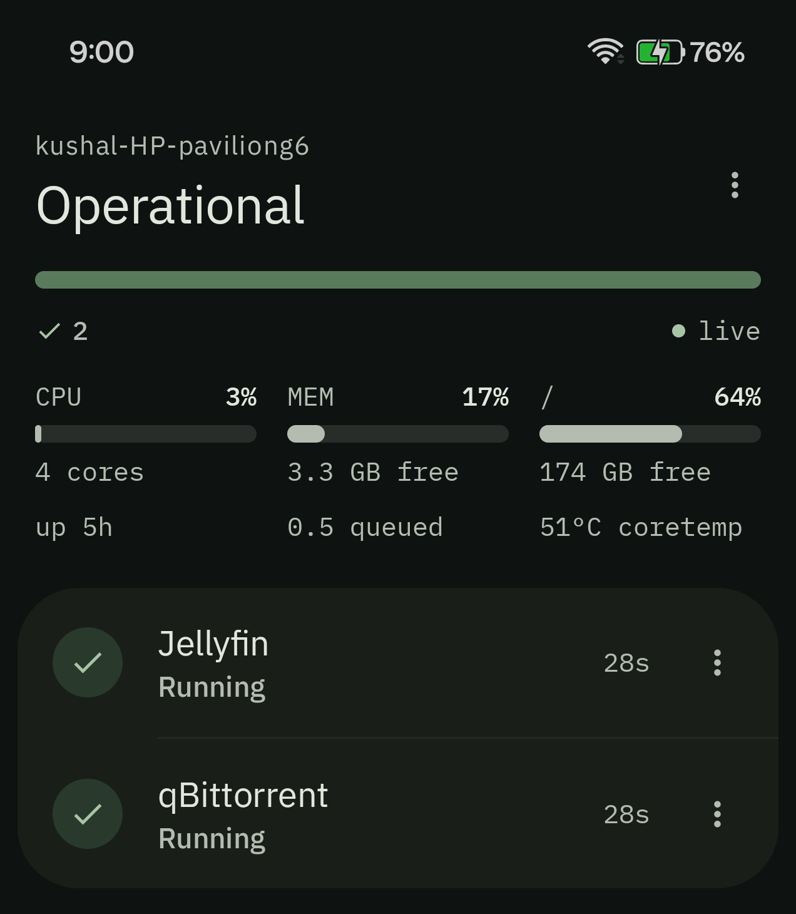
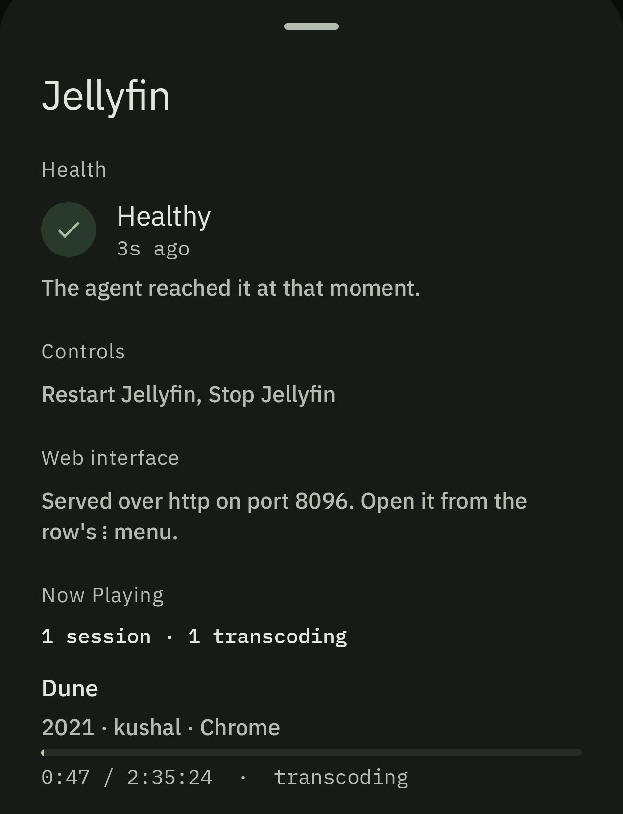

Self-hosted · Android · Linux
A dashboard for the server you already run.
CueSeek watches one Linux machine and the services on it — health, CPU, memory, storage, temperatures — and lets you restart a service or reboot the host from your phone, over your own VPN. No cloud, no account, no telemetry.
Apache-2.0. Linux with systemd and polkit ≥ 0.106, x86-64. Android 8.0+, sideloaded.


What it is
A host agent that also aggregates service APIs — in that order. Restarting a service, rebooting the machine and reading CPU, disk and thermals are host-level operations that no service API can perform, so the agent is mandatory rather than an optimisation.
It runs as its own unprivileged user with an empty capability bounding set, no shell and no
home directory. It never uses sudo, never shells out, and never calls
systemctl. What it may do to your machine is one short polkit rule you can read
in two minutes.
What it is not
- Not a monitoring system. No time series, no history, no alerting. CueSeek tells you when you look; it does not tell you when you are not looking.
- Not a Jellyfin or qBittorrent client. Browsing libraries and managing torrents belong to those apps. CueSeek looks after the service and gets you to them in one tap.
- Not internet-facing. It terminates no TLS and has no certificate. Reachability is your VPN's job, and it refuses at startup to bind a wildcard address without an explicit opt-out.
- Not multi-host. The data layer has carried a host id since M2; the interface shows one machine.
- Not on Google Play, and there is no iOS client or web interface.
How it fits together
Phone / Wear ──Tailscale──▶ cueseekd (user: cueseek, no sudo)
│
├─ api/ REST + SSE · token auth · scopes
├─ health/ computed overall status
├─ store/ SQLite: devices, token hashes, audit log
├─ host/ HostController ──D-Bus──▶ systemd / logind
│ ▲ polkit rule
└─ adapters/ registry, one goroutine per adapter
├─ jellyfin ──HTTP───▶ Jellyfin
├─ qbittorrent ──HTTP───▶ qBittorrent
└─ systemd ──D-Bus──▶ any unit
Two tiers of support
jellyfin and qbittorrent ask the service's own API, so you also
get what it is doing — playback sessions, transfers.
systemd works for any unit on the machine and reports that the
process is running. It does not report that the service is
answering: a wedged service that has not exited reads as healthy. That limit is
stated rather than hidden.
Absent is not zero
A value CueSeek could not read is left out, never zeroed. A virtual machine exposes no temperature sensors, and the first sample after a restart cannot compute CPU utilisation — the kernel reports cumulative counters, and one sample is not a measurement.
Rendering zero would claim an idle, cold machine that never answered.
Status means one of four things
healthy — it answered · degraded — it answered, with a problem · unreachable — it did not answer · unknown — nothing has been observed yet
An expired API key is degraded, not unreachable. The fix is a new key, not a look at the network, and conflating the two sends you to the wrong place.
What it runs on
Deliberately narrow, and better learned here than after the installer refuses.
| Host | Linux with systemd and polkit ≥ 0.106, on x86-64 |
|---|---|
| Phone | Android 8.0 (API 26) or later, sideloaded |
| Network | an address the phone can already reach — Tailscale, WireGuard, or the same LAN |
| Services | Jellyfin and qBittorrent at the full tier; anything with a systemd unit at the basic tier |
What was actually tested
Not a claim about what works everywhere — a record of what this was run against.
| Distribution | Linux Mint 22.3 (Ubuntu 24.04 base), kernel 7.0.0-28-generic |
|---|---|
| systemd / polkit | 255 / 124 |
| Services | Jellyfin 10.11.11 · qbittorrent-nox 4.6.3 |
| VPN | Tailscale 1.102.2 |
| Phone | Android 16 (API 36), OnePlus CPH2707 |
Other distributions, other versions and other phones should work. None has been tried. Not supported: NAS appliances, arm64 including Raspberry Pi, non-systemd Linux, containers as a managed thing, and exposure to the internet — the full list says why for each.
Installing it
Fifteen minutes, most of it deciding which services you want.
tar xzf cueseek-agent_*_linux_amd64.tar.gz cd cueseek-agent_*_linux_amd64 sudo ./install.sh sudo nano /etc/cueseek/config.yaml # set bind.address to your VPN address sudo systemctl enable --now cueseekd.service sudo -u cueseek cueseekd pair # type the code into the app
As shipped it manages no services, and that is a working install — the agent reports the machine's own vitals with no configuration and no privilege at all, and shows an empty service list until you add some.
One command checks the rest: sudo cueseekd check resolves every configured unit
against systemd, compares the configuration's allowlist against the polkit rule's in both
directions, confirms the bind address exists on an interface, and asks each adapter for
its health. It changes nothing.
Full install guide · Configuration · Pairing · Troubleshooting
What it can do to your machine
CueSeek can restart services, reboot the host and power it off. That is a higher bar than
most homelab tooling, so the answer is not "trust me" — it is that
one file
states the whole of it. The agent holds no privilege of its own and never elevates; the
polkit rule grants start, stop and restart on an
allowlist of named units, plus reboot and power-off via logind. Everything
else returns NOT_HANDLED, so the rule only ever adds permission.
That allowlist is enforced twice — in the agent's configuration and in the polkit rule, deliberately not generated from each other. If the two disagree the narrower wins, which is the safe direction.
Network reachability is not authorisation. Every device pairs separately and carries its own
token with independent scopes — read, service.control,
devices.manage, host.power — enforced in the agent, never in the
client. Tokens are stored only as hashes. A device can be structurally incapable of powering
off the machine regardless of what its interface offers.
There is no telemetry, no analytics, no update check and no cloud component of any kind. CueSeek cannot run an arbitrary command: there is no shell and no command execution anywhere in the agent, so service names never become part of a command string.
The security policy lists the risks knowingly accepted, what is out of scope, and the commands to verify all of it yourself.
Error types
Every failure from the API is an
RFC 9457 problem document whose
type is one of the URIs below.
These are stable identifiers, not pages to fetch. RFC 9457 treats
type as an identifier first; dereferencing is encouraged, not required. Clients
match on the string — that is what the Android client does — so the vocabulary is documented
here rather than served, and the URIs stay byte-identical across versions instead of
changing to follow wherever this page happens to be hosted.
| Type | Status | Meaning |
|---|---|---|
| unauthorized | 401 | No bearer token was presented, or the one presented was not accepted |
| insufficient-scope | 403 | The token is valid but does not carry the scope this action needs |
| invalid-pairing-code | 403 | Unknown, expired or already-redeemed — deliberately indistinguishable |
| rate-limited | 429 | Too many pairing attempts |
| not-found | 404 | No such service, device or job |
| action-in-progress | 409 | The same action is already running on that unit |
| action-unavailable | 409 | The agent cannot perform it — an unlisted unit, a missing polkit grant, an unsupported platform. Not 403: your token was fine |
| bad-request | 400 | The request did not parse, or a field was invalid |
| not-implemented | 503 | Declared in the contract but not implemented on this platform |
| internal | 500 | Something the agent could not attribute |
Each is prefixed with https://cueseek.dev/problems/ in the
type field. not-implemented answers 503, not 501,
on purpose: the contract declares 501 for no operation, and adding one would bake a
temporary implementation state into a permanent contract that every client must handle
forever.
Why the decisions are written down
Code shows what was decided. It never shows what was rejected, or what price was knowingly paid. CueSeek keeps fourteen Architecture Decision Records, and every one of them states its own cost — a decision with no listed downside has not been thought about hard enough.
They are also the honest answer to "is this over-engineered?". If you read one thing in this repository, read those.
Architecture decisions · Design system · What has been verified on hardware